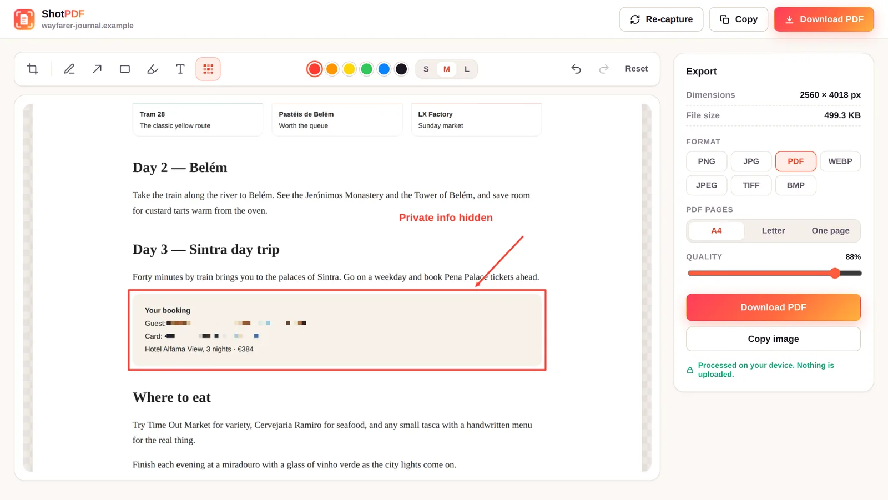
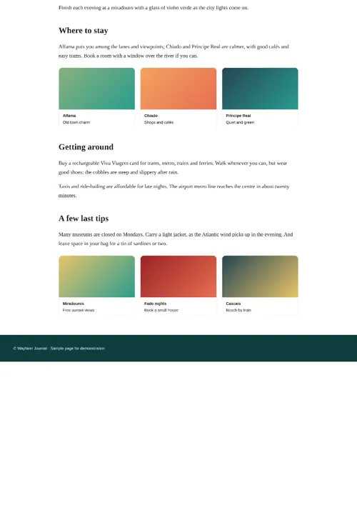
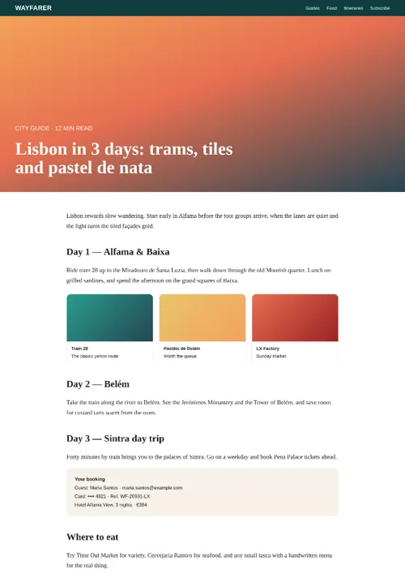
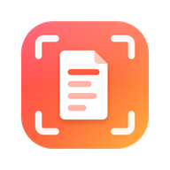

Screenshot the whole page, not just what fits on screen.
ShotPDF scrolls any website for you, stitches it into one clean image, and saves it as a PNG, JPG or PDF. You can blur private details first. Everything happens in your browser.
From long page to file in three steps
-
Capture
Click the icon and choose Full page, Visible area or Select area. Or press Alt+Shift+F.
-
Edit
Crop, add arrows, boxes, highlights and text, and blur anything private.
-
Save or copy
Download as an image or PDF, or copy it straight into chat, email or a document.
Blur what shouldn't be shared
Screenshots often carry emails, names and order numbers. The built-in editor hides them before the file ever exists.
- BlurPixelate emails, names and card numbers.
- CropKeep only the part that matters.
- Mark upArrows, boxes, highlights, pen and text.
- UndoStep back through every change.



Save a webpage as PDF without it being cut off
Pick PDF and choose how the pages are laid out. Or save a picture instead, in the format you need.
Faster once you know the keys
Start a capture without opening anything. You can change every shortcut in Chrome's settings.
Full page
Scroll and stitch the entire page.
Visible area
Capture exactly what's on screen.
Select area
Drag around the part you want.
Prefer the mouse? Right-click any page to start a capture. Need a dropdown menu in the shot? Set a 3 or 5 second delay, open the menu, and ShotPDF captures it.
Your captures never leave your browser
ShotPDF has no servers to send anything to. Scrolling, stitching, editing and saving all run on your own computer.
Read the full privacy policy.
Questions people ask
How do I take a full page screenshot in Chrome?
Install ShotPDF, open the page you want, then click the ShotPDF icon and choose Full page, or press Alt+Shift+F. ShotPDF scrolls the page, stitches every section into one image, and opens a preview where you can edit and save it.
Can I save a whole webpage as one PDF page without it being cut off?
Yes. After capturing, choose PDF and set PDF pages to One page. The entire page is saved on a single long PDF page with no page breaks. You can also choose A4 or Letter pages.
Does ShotPDF upload my screenshots?
No. Capturing, stitching, editing and exporting all happen inside your browser. ShotPDF has no servers, no account and no analytics.
How do I blur private information in a screenshot?
In the ShotPDF preview, pick the Blur tool (or press B) and drag over the email, name or number you want to hide. The area is pixelated in the file you save or copy.
Is ShotPDF free?
Yes. ShotPDF is free, with no watermark and no sign-up.
Why can't ShotPDF capture some pages?
Chrome does not let any extension capture its own protected pages, such as chrome:// settings pages, the New Tab page and the Chrome Web Store. Open a regular website and try again. More fixes are on the support page.

Capture your first full page
Free for Chrome. Takes a few seconds to install.